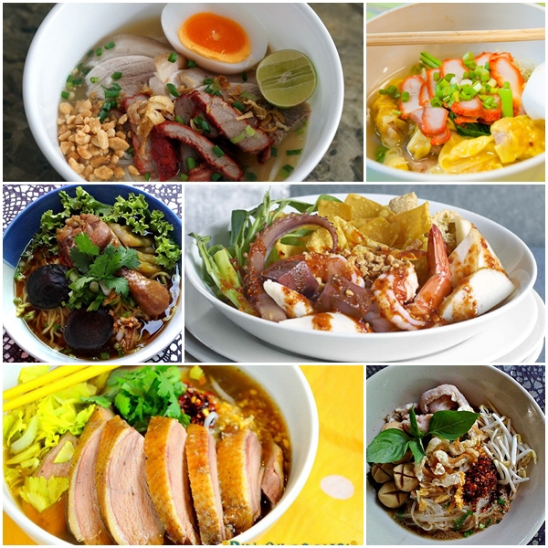

สูตรก๋วยเตี๋ยวเรือ

ก๋วยเตี๋ยวเป็นอาหารที่ชื่นชอบของหลายๆคน น่าจะเป็นเพราะที่เครื่องถึง
เครื่องแน่น อร่อยแบบไม่ต้องปรุงยิ่งดี และตามมาด้วยออฟชั่นพวกเส้น
เนื้อต่างๆ ยิ่งถ้าเราได้ลองลงมือทำเองยิ่งได้ถึงเครื่องจุกๆแน่นๆ
ส่วนผสมน้ำซุปก๋วยเตี๋ยวเรือ
-
น้ำเปล่า 10 ลิตร (ถ้าใช้น้ำมากขึ้น สัดส่วนของเครื่องปรุงและส่วนผสมต่าง ๆ
ก็ต้องคูณเพิ่มไปด้วยเช่นกัน)
- เครื่องตุ๋นหมูน้ำข้น 2 ชุด (ล้างน้ำให้สะอาดก่อนนำไปต้ม)
- ลูกกระวานไทย 5 ลูก
- ใบกระวาน 3 ใบ
- เกลือป่น 2 1/2 ช้อนโต๊ะ
- กระดูกเอียวเล้ง 1 กิโลกรัม
- กระเทียมดอง 5 หัว
- น้ำกระเทียมดอง 1/2 ถ้วยตวง
- รากขึ้นฉ่าย 5 ราก
- ข่าแก่ (ยาว 2 นิ้ว) บุบพอแตก 1 ท่อน
- ซีอิ๊วขาว (สูตร 1) 1/2 ถ้วยตวง
- ซอสปรุงรสฝาเขียว 1/2 ถ้วยตวง
- น้ำตาลมะพร้าว 150-200 กรัม
- ซีอิ๊วดำ 7-8 ช้อนโต๊ะ
- เต้าหู้ยี้โขลกละเอียด 10 ก้อน
- ใบเตย 8 ใบ
- เลือดหมูสด 2 ถ้วยตวง
- ใบตะไคร้
วิธีทำน้ำซุปก๋วยเตี๋ยว
-
ใส่น้ำเปล่าลงในหม้อก๋วยเตี๋ยว นำขึ้นตั้งไฟแรง
ใส่เครื่องตุ๋นหมูน้ำข้นลงไป 2 ห่อ ตามด้วยลูกกระวาน ใบกระวาน และเกลือป่น
ปิดฝาต้มให้เดือด
-
เมื่อน้ำเดือดแล้วจึงใส่กระดูกเอียวเล้งลงไป
ปิดฝาหม้อต้มจนเดือดแล้วจึงหรี่ไฟให้เหลือไฟอ่อน ๆ
-
ใส่กระเทียมดองและน้ำกระเทียมดองลงไป ตามด้วยรากขึ้นฉ่าย ข่าแก่ และใบเตย
- ปรุงรสด้วยซีอิ๊วขาว ซอสปรุงรส น้ำตาลมะพร้าว และซีอิ๊วดำ
-
ปิดฝาหม้อ เคี่ยวด้วยไฟอ่อนต่อไปเรื่อย ๆ ประมาณ 1 ชั่วโมง
(เพราะจะทำให้ความหวานตามธรรมชาติในกระดูกนั้นละลายออกมากับน้ำซุป
ยิ่งต้มนานก็ยิ่งอร่อย)
- เมื่อน้ำซุปเดือดได้ที่แล้ว ใส่เต้าหู้ยี้ลงไป
-
นำเลือดหมูสดมาขยำกับใบตะไคร้ในภาชนะสักครู่
ขยำเสร็จแล้วนำไปกรองด้วยกระชอนตาถี่ ๆ
จากนั้นตักน้ำก๋วยเตี๋ยวขึ้นมาสักกระบวย ใส่ลงไปในภาชนะที่ใส่เลือดหมู
ใช้ช้อนคนเร็ว ๆ ให้เข้ากัน
- เร่งไฟแรงขึ้นแล้วละลายเลือดใส่ลงไปในหม้อน้ำซุป คนเล็กน้อยให้พอเข้ากัน แล้วลดไฟอ่อนลงตามเดิม
คุณค่าทางโภชนาของก๋วยเตี๋ยว
| คุณค่าทางโภชนาการต่อหนึ่งหน่วยบริโภค |
| หน่วยบริโภค |
1 ถ้วย |
518g |
| % ร้อยละของปริมาณที่แนะนำต่อวัน* |
| ไขมันทั้งหมด |
15.9 g |
25% |
| โซเดียม |
2313 mg |
97% |
| โพแทสเซียม |
391 mg |
12% |
| คาร์โบไฮเดรตทั้งหมด |
42g |
14% |
| โปรตีน |
17.5g |
35% |